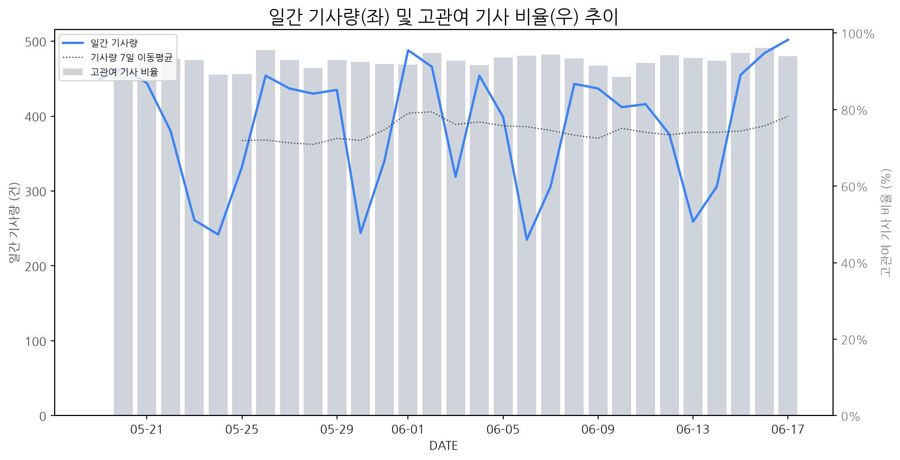

1
시장 활동 지표
기사량 추세 & 이상 징후 탐지
시장의 '전체 기사량'이 평소보다 비정상적으로 급증했는지(Spike)를 차트로 확인하고, LLM이 분석한 급등의 핵심 원인을 파악할 수 있음

고관여 기사란? 산업 연관 키워드로 수집된 기사들 중 디스플레이 키워드에 가중치를 반영하여 도출된 관련성 높은 기사
수집된 기사 수 (2026-06-17)
502
+22% WoW
기사량 변동 수준 (7일 이동평균 대비)
±6.7% 이하
2
오늘의 키워드
급격한 관심 ↑, 주목해야 할 키워드
1
xr
+6.6σ
삼성디스플레이의 차세대 XR 디스플레이 기술 발표로 관련주 동반 급등
Related Metrics
금일 언급량: 38, 전일 대비: +33
Interpretation
XR 시장 선점 경쟁 심화
Next Step
'xr' 관련 상세 기사 및 경쟁사 반응 모니터링
2
하이센스
+6.1σ
삼성전자와의 북미 AI 및 미니 LED TV 시장 경쟁 심화로 하이센스가 주목받고 있습니다.
Related Metrics
금일 언급량: 26, 전일 대비: +18
Interpretation
기술 경쟁 촉진
Next Step
'하이센스' 관련 상세 기사 및 경쟁사 반응 모니터링
3
삼성디스플레이
+5.5σ
삼성디스플레이, 차세대 XR 기기 핵심 부품인 고휘도 RGB 올레도스 공개하며 시장 선점 나서
Related Metrics
금일 언급량: 17, 전일 대비: +17
Interpretation
XR 부품 시장 선도
Next Step
주요 기업 '삼성디스플레이'의 이벤트가 감지되었습니다. 4번 섹션(주요 기업 EVENTS)에서 상세 내용을 확인하세요.
4
서피스
+3.6σ
마이크로소프트가 AI 성능 강화한 신형 서피스 라인업을 출시하며 AI PC 시장 경쟁을 주도했습니다.
Related Metrics
금일 언급량: 9, 전일 대비: +9
Interpretation
AI PC 수요 증가 예상
Next Step
'서피스' 관련 상세 기사 및 경쟁사 반응 모니터링
3
실시간 Risk 키워드
경계해야 할 시그널 탐지
특정 토픽의 부정 감성 점수가 급등할 때 이를 즉시 탐지하고, "근거 기사" 링크를 통해 리스크의 실체를 빠르게 파악할 수 있음
키워드 분석 결과, 오늘은 걱정할 만한 하락 신호가 없습니다. (부정 언급량 변화: +1.5σ 이내)
4
주요 이벤트 모니터링
실시간 산업 동향 파악을 위한 주요 활동
최근 발생한 주요 기업들의 신제품 출시, 투자 등 주요 이벤트를 제공하여 매일 경쟁사 동향을 확인할 수 있음
BOE는 낮은 수율에도 불구하고 8.6세대 OLED 양산을 시작했으며, 이는 삼성디스플레이가 수익성을 고려한 실리적 대응을 취하도록 압박하고 있습니다.
Impact
BOE의 8.6세대 OLED 양산 강행은 IT용 OLED 패널 시장의 공급 확대와 가격 경쟁 심화를 야기하여 삼성디스플레이의 시장 점유율 및 수익성에 영향을 줄 수 있습니다.
Next Step
삼성디스플레이는 BOE의 저가 공세에 대응하여 고부가가치 제품 라인업 강화 및 차세대 기술 개발 투자로 경쟁 우위를 확보해야 합니다.
마이크로소프트가 퀄컴의 스냅드래곤 X 엘리트 및 X 플러스 칩을 탑재한 새로운 서피스 프로와 서피스 랩탑을 국내 시장에 공식 출시했습니다. 이번 신제품들은 AI 기능 강화와 함께 향상된 성능 및 배터리 효율성을 특징으로 합니다.
Impact
ARM 기반 고성능 노트북 시장의 성장을 가속화하고, 디스플레이 패널 업계에서는 고해상도, 고주사율, OLED 등 프리미엄 디스플레이 채택률 증가에 긍정적인 영향을 줄 수 있습니다.
Next Step
고성능, 고효율 디스플레이 기술 개발 및 생산 능력 확보에 집중하여 MS와 같은 주요 OEM사의 차세대 디바이스 수요에 적극적으로 대응해야 합니다.
이마트가 창립 17주년을 맞아 대규모 할인 행사를 진행한다. 이번 행사는 다양한 상품군에 걸쳐 할인이 적용될 예정으로, 소비자들의 구매 심리를 자극할 것으로 보인다.
Impact
이마트의 할인 행사는 TV 및 기타 디스플레이를 포함한 가전제품 판매량 증가를 유도하여 단기적으로는 디스플레이 제조사들의 매출 증대에 긍정적인 영향을 줄 수 있다.
Next Step
행사 대상 디스플레이 제품의 재고 관리 및 판촉 프로모션 강화 방안을 검토해야 한다.
삼성디스플레이가 차세대 XR 시장을 겨냥하여 초고휘도 'RGB 올레도스'를 출시했습니다. 이는 기존 기술 대비 월등한 성능으로 XR 기기의 몰입감을 극대화할 것으로 기대됩니다.
Impact
이번 삼성디스플레이의 신제품 출시는 XR 기기의 핵심 부품 경쟁력을 강화하고, 관련 디스플레이 기술 발전을 가속화하여 XR 시장의 성장을 견인할 것입니다.
Next Step
경쟁사들은 고휘도 및 고해상도 올레도스 기술 개발에 집중하고, XR 기기 제조사들과의 협력을 통해 차세대 XR 디스플레이 시장에서의 경쟁 우위를 확보해야 합니다.